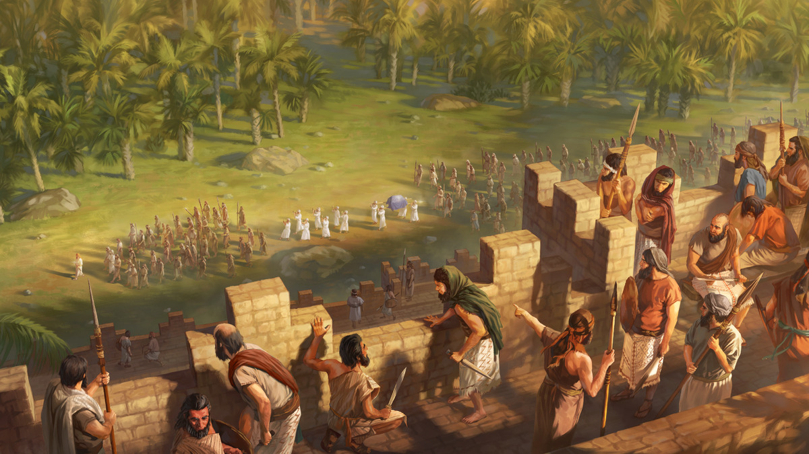
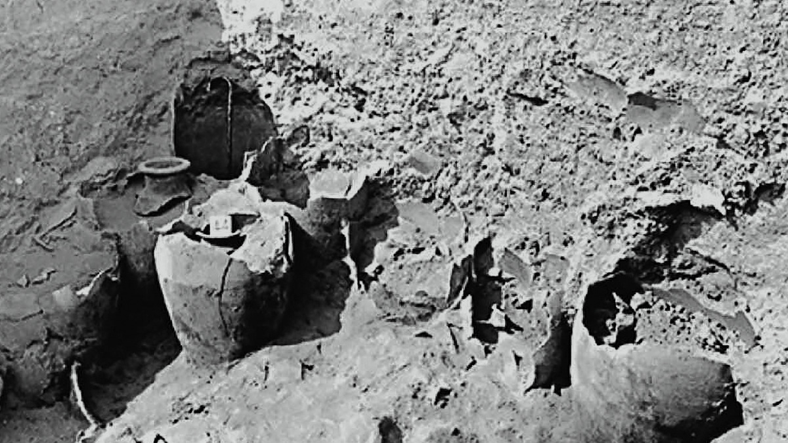
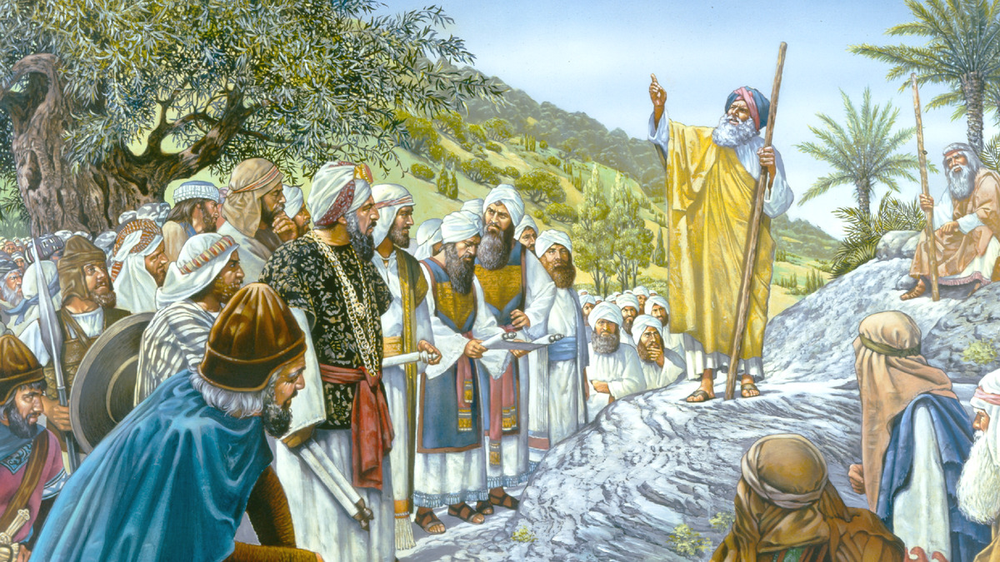
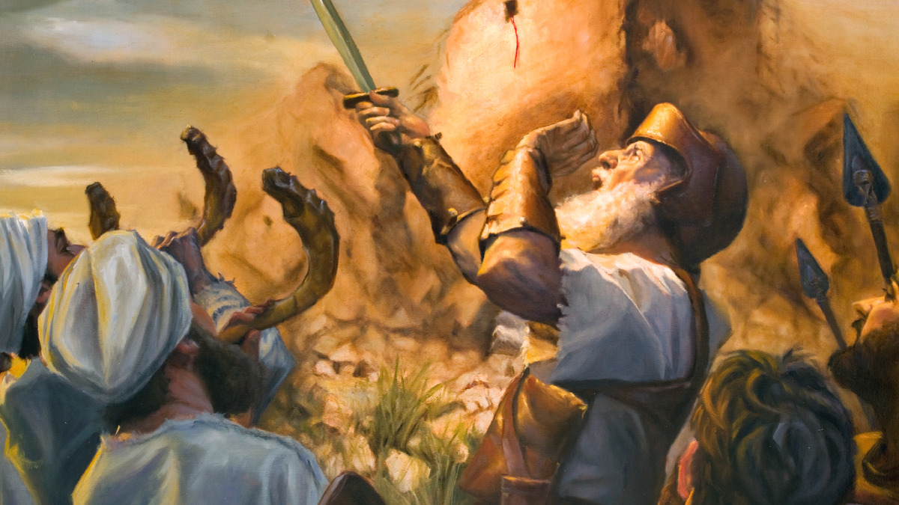

13 Josué · semana de 19 a 25 de outubro de 2026
Ele obedeceu mesmo sem entender
Leia o relato na Bíblia: Deuteronômio 20:16-18; Josué 2:1, 9-11, 24; 3:14-17; 5:1; 6:1-21, 24
Tempo do estudo: 30 minutos (parte 9 da reunião)
Cada parágrafo traz o conteúdo resumido, com as frases citadas do capítulo, os textos bíblicos escritos e um comentário pronto. O texto oficial completo está no jw.org e no JW Library: cada parágrafo tem um link direto.

Josué olhava para Jericó, a cidade que Deus mandou atacar e destruir. Ele se lembrou do que Jeová disse pouco antes de Moisés morrer: “Seja corajoso e forte.” Depois Jeová disse algo parecido: “Seja corajoso e muito forte.” Josué precisaria de muita coragem. Por quê?
Jericó não era muito grande, mas era protegida por uma grande muralha em toda a sua volta, e seria a primeira cidade a ser atacada. O povo dali estava mergulhado na maldade. Séculos antes, Jeová tinha falado a Abraão sobre “o erro dos amorreus”, os pecados de todo o povo de Canaã, e disse que um dia não ia mais tolerar aquilo. Esse dia chegou. Eram prostituição nos locais de adoração, idolatria, incesto, e até sacrifício de crianças. Jeová disse que a terra precisaria vomitá-los!
A instrução que Josué recebeu de Jeová sobre como atacar Jericó não fazia sentido do ponto de vista militar
Deus usaria Josué e seu exército, e começaria por Jericó a limpar a terra da maldade. Mas as instruções pareciam não fazer muito sentido. Jeová não mandou atacar logo, nem cercar a cidade por muito tempo. Simplesmente marchar em volta de Jericó, uma vez por dia, durante seis dias, com sacerdotes levando a Arca e tocando buzinas. No sétimo dia, sete voltas, e daí gritar.
Josué já tinha lutado antes. Aquela estratégia não fazia sentido do ponto de vista humano e militar. E se Israel perdesse a batalha? O que as outras cidades de Canaã iam pensar? Iam achar que os israelitas não eram nada?
Só que Jeová já tinha dado a Josué motivos para confiar nele. Quando Josué mandou dois espiões a Jericó, eles souberam que os homens daquela cidade estavam com medo dos israelitas. Depois Jeová fez o milagre de parar as águas do rio Jordão, e o povo atravessou.
Meditar nessas coisas com certeza aumentou a fé de Josué e deu coragem para obedecer. Ele liderou a marcha, e os sacerdotes tocaram as buzinas. A cidade estava quieta, “completamente fechada”, porque o povo estava com medo. No dia seguinte marcharam de novo, exatamente como Jeová mandou, e assim fizeram dia após dia, por seis dias. Então chegou o sétimo dia.
Naquele dia, o exército deu sete voltas. No fim da sétima, Josué disse em voz alta: “Gritem, pois Jeová lhes entregou a cidade!” Não precisaram esperar muito. Assim que o povo deu um grande grito de guerra, a muralha caiu por terra.
Josué e seus homens entraram e destruíram tudo o que respirava, assim como Jeová tinha ordenado. Com a ajuda de Jeová, foram derrotando cidade após cidade, nação após nação. Jeová estava limpando aquela terra do “erro dos amorreus”.
Só que uma parte bem pequena da muralha de Jericó não caiu. Por quê? A resposta tem a ver com a coragem de uma mulher que mostrou fé em Deus, assunto do próximo capítulo.
Para considerar
De que maneiras Josué mostrou coragem?
Meu comentário comentário base
Do Guia de Pesquisa Josué 1:7-9
- w09 1/12 p. 17: Jeová disse a Josué três vezes no mesmo capítulo que ele precisava ser corajoso e forte. E a coragem viria de ler a Lei “em voz baixa dia e noite” e de aplicar o que lia.
- Josué 1:9 foi o texto do ano de 2013, e o Guia indica o artigo “Seja corajoso, Jeová está com você!” (w13 15/1 p. 8).
Analise mais a fundo
1. Que partes das Escrituras provavelmente estavam disponíveis para Josué?
(w09 1/12 17 § 4, nota) A
Meu comentário comentário base
Do Guia de Pesquisa Josué 1:8
- w09 1/12 p. 17: uma obra de referência explica que Jeová mandou Josué “sussurrar” a Lei para si mesmo, ponderar e meditar nela. Ter a Palavra não bastava; ele precisava ler e aplicar.
- O Guia ainda indica para Josué 1:8 a lição 11 do Seja Feliz para Sempre!, “Como você pode aproveitar ao máximo a leitura da Bíblia?”, e o Perspicaz, “Meditação” § 4.
2. Antes de os israelitas marcharem em volta de Jericó, o que Jeová pediu para Josué fazer? Por que essas instruções talvez não parecessem uma boa estratégia?
(Jos. 5:2-8; w18.10 23 §§ 5-7)
Meu comentário comentário base
Do Guia de Pesquisa Josué 5:2; 5:13-15
- w18.10 p. 23: antes disso, Josué encontrou um homem com espada na mão, o “príncipe do exército de Jeová”. Foi provavelmente por meio desse anjo que Jeová deu as instruções sobre Jericó.
- O mesmo artigo diz que a marcha, além de fortalecer a fé, evitou que os israelitas tivessem que lutar contra os soldados poderosos de Jericó.
- O Guia indica o Perspicaz, “Faca, Cutelo” § 3, para as facas de pedra de 5:2.
3. Que prova existe de que Jericó não ficou sitiada por muito tempo antes de ser conquistada?
(w15 15/11 13) B
Meu comentário comentário base

Do Guia de Pesquisa Josué 6:20
- O Guia indica, além da w15, o Perspicaz, “Arqueologia” § 25, e o livro A Bíblia: Palavra de Deus ou de Homem?, cap. 4.
- Jos. 6:18: a ordem de ficar longe do que estava condenado explica por que o cereal ficou lá.
4. Como a profecia sobre Jericó em Josué 6:26 se cumpriu?
(w98 15/9 21 § 8)
Meu comentário comentário base
Do Guia de Pesquisa Josué 6:26
- it “Jericó” § 9: antes de Hiel, houve ali só um povoado, até no tempo de Davi. Foi no reinado de Acabe que Hiel realmente reconstruiu a cidade, e a maldição proferida por Josué mais de 500 anos antes se cumpriu.
- it “Josué, Livro de”: usa esse cumprimento como prova de que o livro é verdadeiro.
- O Guia ainda indica os verbetes “Abirão”, “Maldição” e “Hiel”.
Medite no que aprendeu
Por que Josué confiava nas promessas de Jeová? (Jos. 23:14) Como podemos ter essa mesma confiança hoje?
Meu comentário comentário base
Do Guia de Pesquisa Josué 23:14
- w10 1/1 p. 12, “Um Cumpridor de promessas”: cita uma obra que desafia a pesquisar toda a história para ver se encontra uma única vez em que Deus quebrou ou esqueceu uma promessa.
- Para jovens, w08 15/5 p. 17-18: criado no Egito, Josué conhecia a promessa da terra e depois viu cada passo dela se cumprir. Por isso disse: “Quanto a mim e aos da minha casa, serviremos a Jeová.”
- Para idosos, w04 15/5: já idoso, Josué reuniu os anciãos para lembrar o que Jeová tinha feito. Os mais velhos fazem isso hoje quando contam a experiência deles.
Como o exemplo de Josué nos ajuda a seguir as instruções da organização de Jeová? C
Meu comentário comentário base
Da Sentinela de outubro de 2018
- O título do artigo é “Confie: Cristo está nos liderando”. Ele diz que Jeová, o Líder invisível de Israel, sabia exatamente o que estava fazendo, e que a estratégia fortaleceu a fé dos israelitas.
- Para um segundo comentário: a obediência a uma orientação que parece estranha pode nos proteger de uma luta que nem sabemos que existiria.
Como você pode imitar a coragem de Josué?
Meu comentário comentário base
Do Guia de Pesquisa verbete “Josué”
- w02 1/12, “De que Josué se lembrou”: quando a assembleia falou em apedrejar Josué e Calebe, eles disseram com firmeza o que acreditavam. “A lealdade para com Jeová pode exigir que nós façamos o mesmo.”
- Uma aplicação para quem já tem idade: o irmão que dá testemunho por carta ou telefone toda semana, sem saber se alguém vai responder, está marchando em volta de Jericó.
Pense no quadro completo
O que esse relato me ensina sobre Jeová?
Meu comentário comentário base
Do Guia de Pesquisa Gênesis 15:16
- O Guia indica para esse versículo o livro Achegue-se a Jeová, cap. 6 § 12, “Jeová é um poderoso guerreiro”, e o artigo “Por que Deus guerreou contra os cananeus?” (w10 1/1 p. 14).
Como esse relato está relacionado com o propósito de Jeová?
Meu comentário comentário base
O que eu gostaria de perguntar para Josué quando ele for ressuscitado?
Meu comentário comentário base
Aprenda mais
Como o exemplo de Josué nos ajuda a aprender dos mais velhos, a confiar nas promessas de Deus e a permanecer fiéis mesmo quando um irmão nos magoa?
“De que Josué se lembrou” (w02 1/12 9-12)
Meu comentário comentário base

Leia o artigo completo.
“De que Josué se lembrou” (w02 1/12 9-12), no wol.jw.org.

Ajude seus filhos a aprender sobre acontecimentos importantes na vida de Josué.
“Josué”, cartão bíblico no jw.org.
Guia de Pesquisa: verbete “Josué”
O que o Guia de Pesquisa do seu JW Library lista para Josué, por assunto. Bom para achar um comentário diferente.
- Informações gerais: it-2 “Josué” n.º 1; “De que Josué se lembrou” (w02 1/12 9-12); si p. 42-43
- Para anciãos: “Aceite a Bíblia pelo que realmente é” (w95 1/5 12-13)
- Para crianças: “Josué e Calebe” (ljfac artigo 6); vídeo “Vamos Aprender com os Amigos de Jeová, Josué e Calebe”
- Para idosos: “Os idosos são membros valiosos da nossa fraternidade cristã” (w04 15/5 13-14)
- Para jovens: “Escolha servir a Jeová enquanto for jovem” (w08 15/5 17-18)
- Confiança: “Um Cumpridor de promessas” (w10 1/1 12); w03 1/3 14
- Coragem: wcg cap. 13; ijwbv artigo 10; w13 15/1 8-9; w06 1/10 16-17
- Fé: mwb17.06 2; w02 1/12 11-12 · Leitura da Bíblia: w09 1/12 17; w95 15/12 13 · Obediência: w86 15/12 11 § 6
- Pressão de outros: w11 15/7 10-12 · Problemas e dificuldades: w13 15/8 14
Roteiro de 30 minutos
Estudo de livro, nove parágrafos curtos e as quatro seções de pergunta. Os tempos são referência: o que passar de um item, tire do outro.
Abertura com uma pergunta
“Vocês já receberam uma orientação que, na hora, não fazia sentido nenhum?” Depois diga onde o estudo vai chegar: Josué recebeu uma ordem assim, e obedeceu.
Leitura dos nove parágrafos
Designe um irmão. Os parágrafos são curtos; dá para ler em dois blocos, §1 a §4 e §5 a §9.
Leituras bíblicas com a assistência
Josué 6:2-5 e 6:20. A ordem e o resultado.
Para considerar
As maneiras de coragem. Aceite dois comentários e complete com o detalhe da marcha em silêncio (Jos. 6:10).
Analise mais a fundo, as quatro perguntas
Um comentário por pergunta. Na 1, a imagem A. Na 3, a imagem B, dos cereais. Na 4, leia 1 Reis 16:34.
Medite no que aprendeu
Três minutos para as promessas, com Josué 23:14. Dois para a imagem C, das instruções. Dois para imitar a coragem.
Pense no quadro completo
O que aprendemos sobre Jeová e como Jericó se liga à promessa feita a Abraão.
Encerramento
Recomende “De que Josué se lembrou” e deixe a curiosidade: a pequena parte da muralha que não caiu é o assunto da próxima semana.
Se o tempo apertar
Pode cortar: a pergunta 2 de “Analise mais a fundo”, resumindo em uma frase, e a última pergunta do quadro completo.
Não pode faltar: por que a ordem não fazia sentido, os motivos que Josué tinha para confiar, a obediência dia após dia, e Josué 23:14.
Resumo: os pontos altos deste estudo
Para o encerramento, ou para revisar depois em casa.
O caminho que percorremos
- Por que era preciso coragem. Uma cidade murada, cheia de maldade, a primeira da conquista. §1, §2
- Uma ordem que não fazia sentido. Nem atacar, nem cercar: marchar. §3, §4
- Motivos para confiar. Os espiões, o Jordão, e a obediência dia após dia. §5, §6
- A muralha caiu. Exatamente como Jeová disse. §7 a §9
Os sete pontos altos
- A coragem que Jeová pediu a Josué era coragem para obedecer, e vinha de ler a Lei dia e noite.
- Jeová esperou séculos até a maldade de Canaã atingir a plena medida.
- A ordem de marchar não fazia sentido para um militar experiente.
- Josué tinha motivos para confiar: o medo de Jericó e o Jordão parado em plena enchente.
- Seis dias de marcha em silêncio, sem ver nada mudar.
- Josué gritou “Jeová entregou” antes de a muralha cair.
- Josué 6:26 se cumpriu uns 500 anos depois, com Hiel.
Três frases para o encerramento
- “Josué não entendeu a ordem, mas conhecia quem estava dando a ordem.”
- “A muralha não caiu no primeiro dia. Caiu no sétimo.”
- “Nem uma palavra de Jeová falhou. Nem uma vai falhar.”
Suas respostas
Cada campo já vem com um comentário pronto. O que você ajustar fica salvo automaticamente neste navegador, neste aparelho. Para levar para outro aparelho, baixe o arquivo aqui e carregue no outro lado.
O arquivo é um .json com os seus comentários e as anotações marcadas como vistas. Carregar substitui o que estiver escrito nesta página, e a página avisa antes.
Preparação baseada no capítulo 13 do livro Ande Corajosamente com Deus, “Ele obedeceu mesmo sem entender”. Publicações consultadas: A Sentinela de 1/12/2009, outubro de 2018, 15/11/2015, 15/9/1998, 1/12/2002, 1/1/2010, 15/5/2008 e 15/5/2004; Estudo Perspicaz, verbetes “Jericó”, “Josué” e “Josué, Livro de”; Guia de Pesquisa do JW Library. Bíblia: Tradução do Novo Mundo da Bíblia Sagrada, wol.jw.org, com 406 versículos incluídos nesta cópia para funcionar sem internet.
Os resumos, os comentários base, as anotações e o roteiro são notas de preparação pessoal, não material publicado pelas Testemunhas de Jeová. O capítulo, as imagens e o texto da Bíblia são propriedade da Watch Tower Bible and Tract Society.